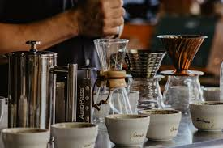

From Bean to Cup: The Journey of Your Morning Coffee
Ever wondered about the incredible journey your morning coffee takes before reaching your cup? At Brew & Bloom, we're passionate about sharing the story behind every sip you take. Let's explore the fascinating voyage of coffee beans from distant farms to your favorite café.
The Growing Story
High in the mountains of countries like Ethiopia, Colombia, and Guatemala, coffee cherries slowly ripen under the warm sun. Our partner farmers carefully tend to these precious fruits, waiting for the perfect moment to harvest. Each cherry is hand-picked at peak ripeness, ensuring only the best beans make it to your cup.
From Cherry to Bean
Once harvested, the coffee cherries undergo careful processing to reveal the beans inside. Whether it's the washed method, where beans are fermented and cleaned to create bright, clean flavors, or the natural process, where cherries are dried in the sun for richer, fruitier notes, each step is crucial to developing the coffee's final taste.
The Roasting Magic
This is where science meets artistry. Our master roasters transform the raw green beans into the aromatic coffee you know and love. Through carefully controlled heat and timing, they develop each bean's unique characteristics - from bright citrus notes to deep chocolate undertones. Every batch is roasted to perfection, bringing out the best flavors that these beans have to offer.
Our Careful Selection
At Brew & Bloom, we travel to coffee farms throughout the year, building relationships with farmers and selecting only the finest beans. We pay premium prices to ensure sustainable farming practices and support local communities. These partnerships allow us to bring you exceptional coffee while making a positive impact at origin.
The Final Craft
Our skilled baristas are the final artists in this journey. Using precise temperatures, timing, and techniques, they craft each beverage to highlight the unique characteristics of our carefully sourced beans. Whether you prefer a smooth latte or a bright pour-over, every cup represents the culmination of this remarkable journey.
Your Part in the Story
When you visit Brew & Bloom, you're not just drinking coffee - you're participating in a global journey that connects farmers, roasters, baristas, and coffee lovers. Each cup represents countless hours of craftsmanship and care, from the first bloom of the coffee flower to the final pour into your cup.
Come experience the result of this amazing journey at Brew & Bloom. Our passionate team is always ready to share more about your coffee's origin story and help you discover your perfect cup. ☕